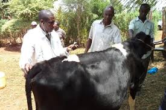

veterinary Services
we offer link to cow expert veterinary officers in all locations in Kenya.
we offer link to cow expert veterinary officers in all locations in Kenya.
After purchase of your cow, we offer free transport services to your location. We use appropriate methods of moving cattle by road motor vehicle or by rail wagon.
We also offer cow shade construction services at an affordable price.
The following is the recommended housing plan for a small scale zero grazing unit. The cubicle of a dairy cow shed has three distinct areas: